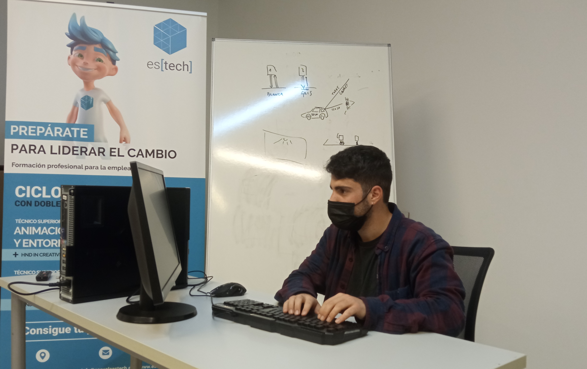
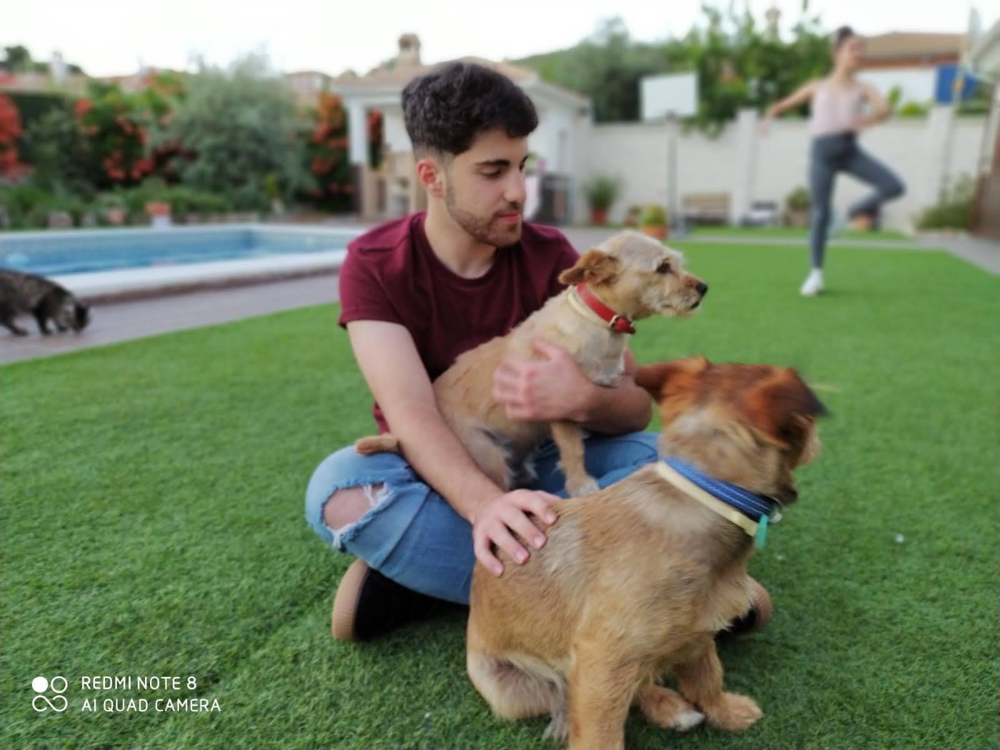

Bienvenidos a mi blog personal


Un poco más sobre mi
Soy un chico de 21 años intersado en el mundo de la informática, actualmente me encuentro cursando un grado superior de informática en la escuela Estech, Linares, esta y más información académica podeis consultarla en mi pestaña de estudios.
Personalmente soy una persona energética y curiosa, siempre en busca de nuevos proyectos y cosas que aprender.
Me gusta la lectura, las escapadas a la naturaleza, practicar skateboaring en mi tiempo libre, conseguir nuevas dotes culinarias, y, porsupuesto, ¡El buen café!